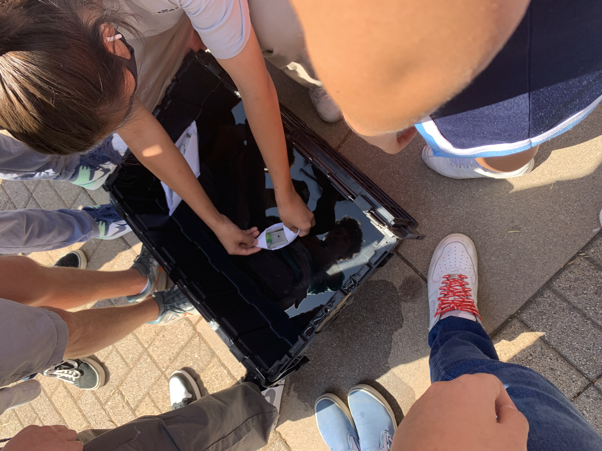
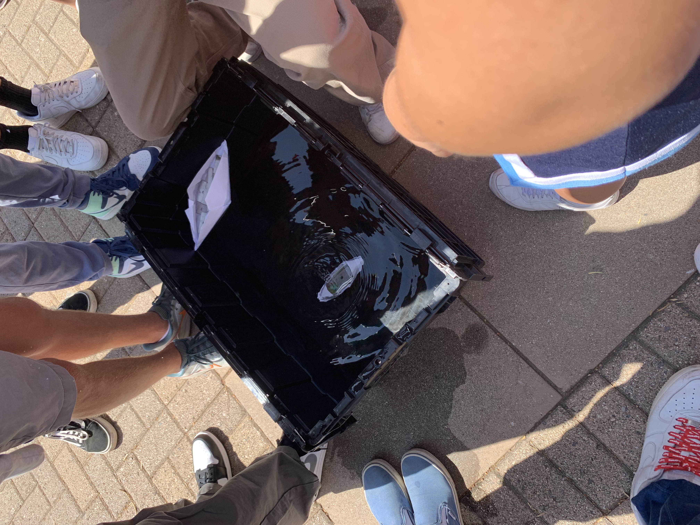
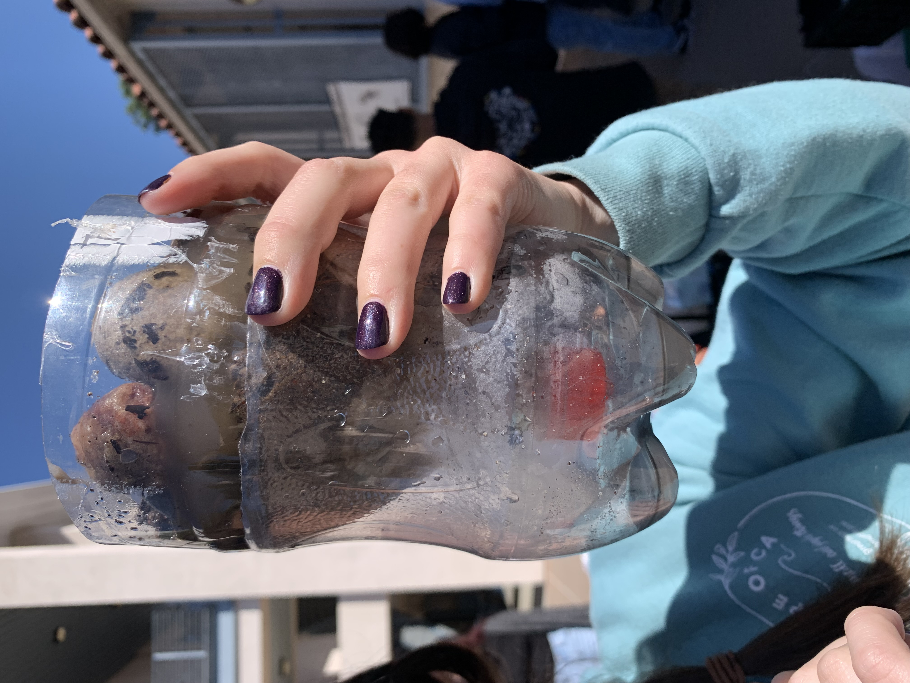
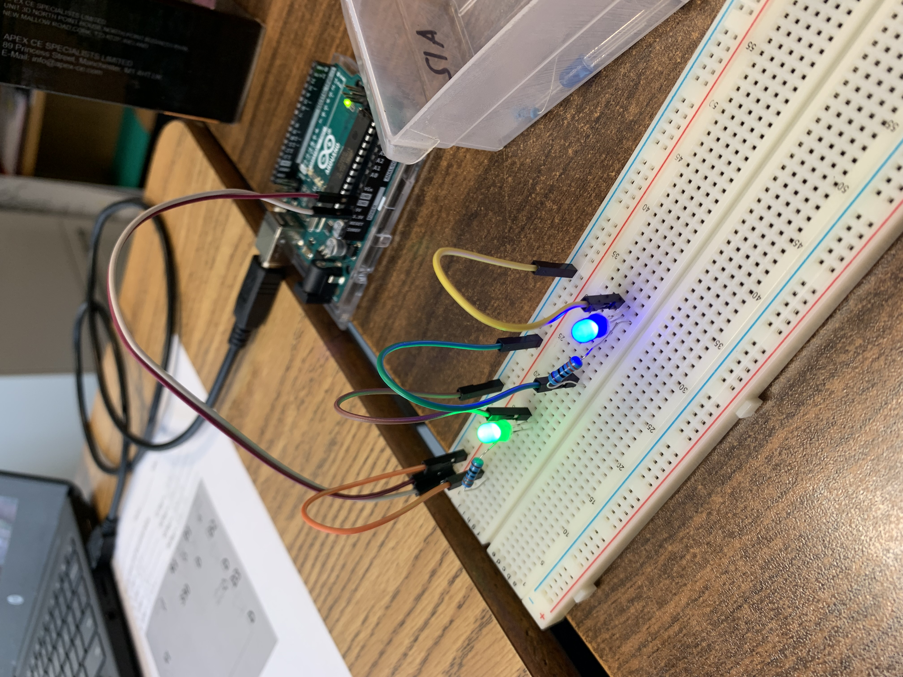

Week 3!This week I learned a lot of stuff. On Wednesday we started using Tinkercad and It is very difficult to use, but I think I'm staring to get the hang of it. Today(friday) we did a challenge. We had to bring an object from home and then make it in tinkercad. This took a while to do but I am pretty happy with my results.
Week 4!Today on Semptember 14th, we worked on our Rube Goldberg machine. My group and I finished our ramp with the incline. We also got to finish the pulley on top of the incline. So far we have not run into any problems and I am happy with how it looks. Today September 16th we did a challenge with a paper boat. My groups boat failed miserably. We should have explanded the surface area of the boat. Instead we put it in the water and it sank immediatly.
 Week 5! This week we mostly worked on our Rube Goldberg project. On monday we got a lot of work done on our machine. Our whole incline ramp a well as the pulley was completed that day. Then, on wednesday we got to work some more on it. After our final adjustments, we got to testing. Our balloon thankfully popped after the first try. Our car that was pushed by the baseball rolled very slowly but either way it worked out. Today(friday) more groups are testing their machines and we get to watch all the creative projects made.

Week 6!This week we got to take apart old computers. This was a very cool projectand helped me understand how a computer is built. Some of the screws were very difficult to get out but other than that my group and I did well. After following the slides and taking it apart, we got to put the whole thing back together. We struggled a little bit when it came to remembering which screw went where, but eventually we got it down. Overall, this was a good week in this class.


Week 7!On week 7 we started a new chapter on Bioengineering. Bioengineering is very interesting. It includes making prosthetics, making machinery for hospitals, and has a lot of links to the medical field. 10/5 our class did a challenge that included finding and researching an animal of our choice. I chose a shark. Then we had to pick a limb of the animal and make a realistic prosthetic for it. I picked the dorsal fun and made it of carbon fiber and Slicone. Today on 10/7 we did a challenge to write the exact instructions of making a PB&J. It was much more difficult than I had expected to write such clear instructions.

Week 8!This week we started a new field of engineering, aerospace. We are doing a project related to this field, which will be making a bottle rocket. This rocket will be made up a 1-2 liter soda can with wings, a cone, and a lot of duct tape. Tomorrow our groups will start building. Today 13/10, we did a challenge with paper airplanes. I made an airplane but when I threw it off the building, it almost went backwards. So, I would call that challenge a fail on my part.

Week 9!This week my group and I worked on our bottle rockets. OUr design ressembled a biplane. On Friday we got to test it. Our plane did many circles in the air and then crashed. I think that if the wings of our rocket were angled well, it could have gone further. It was very fun watching the other groups rockets and how they did.

Week 10!This week we worked on environmenal engineering. This includes making the Earth healtheir and trying to prevent pollution of all sorts. We did a water filering project on Friday. My group put a lot of tissue on the bottom, then sand, small rocks, and on the top had the big rocks. When we poured in contaminated water, the rocks and bigger debris was caught in the layers, as well as small grains and such. Our water turned out very clear! Another halloween challenge we did was guessing how many candy corns could fit on a paper. My group and I were way to low.
Week 11!In week 11 we started a new unit for electrical engineering. The first day we watched as slide show presentation where we learned some basics on engineering. We also did some math with equations finding resistance, amps, and things. The next class we started using tinkercad. We had to copy diagrams of circuits put up on the board to try and use resistors and light up lights. It took me some getting used to and was pretty difficult getting the lights to light up. Although, I just had to figure out how to correctly connect it and then got it figured out.

Week 12!This week we worked on electrical engineering. Me and my partner
worked together to work on the circuit board. The goal was to get the LED lights to ligh tup in different
circuits. We had accidentally used the wrong lights for the series board which was our only mistake.
On Thursday we did a challenge with math. It was asking which would take longer, sitting in a math class
for 50 minutes every school day, or counting to a million. I got that the math class would total to
150 hours and too count to 1 million wold take me 833 hours. I averaged that every number would take about 3 seconds for me to say(since the larger numbers take longer to say) and then I muntiplied 1 million by 3 for 3 seconds. After that, I ended up with seconds which I then converted to hours. In the end, I would much rather sit in math since I enjoy math and we already do that for school everyday.



Week 13!This week we started our sphagetti bridges. We need to make 4 prototypes. Our first prototype was used 20 pieces to make a straight across bridge. We attempted to make it a triangle bridge to create support. It was very difficult making all the little cut pieces even and getting them to glue onto the other pieces. Another issue we had was getting our bridge off of the paper towels they dried on.

SEMESTER 2
Week 1!This week we learned about business engineering. These engineers work with many groups of people within their jobs and sometimes have to design and advertise new products for a certain group of people. Our groups had to come up with a helpful invention and present to the class. My groups invention was a new Math website called The Mathinator. It was mostly to help students or anyone who uses math on the daily, and wants a reliable, fast, and easy website to use for complicated problems a normal calculator would not be able to solve. This was a very difficult project since my group had so many designs to choose from in so little time.

Week 2!This week we learned about chemical engineering. This is the most interested I have been in a field of engineering so far. We were taught a whole bunch of different jobs a chemical engineer could have from working with cosmetic to nanotechnology. I am personally very interested in nanotechnology. This is a very broad field. On Friday we worked with oobleck. It was very satisfying watching the water mix in with the corn starch and become a solid/liquid consistency.

Week 3In week 3 we started on our projects. Me and my parnter decided to work on the mousetrap car. We were required to write a project proposal which is what we spent our week doing. Aong with that I was able to do a lot of research to prepare for my design making on tinkercad. I have been working on my 3D design on tinkercad for a couple days. My design consists of pencils, CD's, a moustrap, and a string. These things together will be used to make a successful mousetrap car.
Mousetrap Car!My partner Marina and I have been working very hard on our mousetrap car project This car has come a long way. We started off very strong with this car and were able to make the body, attach the wheels, and the string very quickly. It seemed as if all was perfect until we tested it. The string would not unravel. We attempted many different ways of rolling it on the dowel and made sure it was neat. However, this did not work. We eventually realized that our wheels had too much glue on the sides of them, which caused them to rub against the side of the car body. This would keep the car from rolling smoothly. We had to take off the two back wheels and scrape off as much glue as we could in order to reattach them. After it was put together again, it ran perfectly. The string no longer got stuck on the dowel and it is able to roll a little over one class length. We also added decorations in our free time. We are very proud of how this car has turned out.

Week 6The past 6 weeks, Marina and I have been working very hard on our mousetrap car. Marina had found some good inspiration off of the internet for our car and the goals that we wanted to set for this project. We began working and made the car body fairly quickly. Within a week of building and starting the project we got to testing the car and its capabilities. Everything looked good and we set up the car to see it roll for the first time, when we set it on the ground and let go, nothing happened. We gave it a little push but it was not doing much. This was quite disappointing but we understood that we would have to find the problem and fix it.
When we began looking for the problem, we first linked the issue to the kind of string we had been using. So, we switched to a different string. This did not make it any better. After that, we tried to change the length of the string and attempted to spin it onto the dowel very neatly, making sure it would not get caught. We had made little to no progress still. It would either not move at all, or move and stop halfway through. With some help and excessive testing, we found out the wheels were the issue. They were not spinning well or easily. We had excess glue on the side of the wheels, connecting the sides of the wheel to the body of the car. This made the wheel stop spinning. We got to work in order to fix this.
We decided to take the wheels off of the dowels and to get a longer dowel, and to use less glue. This would make sure the wheels would not be touching anything. After careful work, we managed to get the CD's off and began regluing them onto a new dowel. When we tested it we saw improvement. The car even started moving in a straighter line when we redid the wheels. In the end we had to add a little bit of glue by our string to keep the dowel in place even better which made our car even better. At this point the car became very consistent and was moving very well. It could move anywhere from 1-2 classes down the hallway every time we tested it. During the final competition against the other cars, we placed third due to the distance it was able to cover. We are very proud of how our car has developed and turned out.
Week 9!Today on March 9th we did a challenge. We were given a variety of random materials to build a boat with a propeller on it. My group sruggled with ideas at first but then decided to use a balloon as the propellor. We attached it to a cup on a boat and then blew it up. We had to hold the end and then let go when testing it. Before testing it we realized our boat was too wide which we had to change. When testing, our boat did not go very far. It reached 4 feet down. Our balloon propelling system was not as useful as we expected it to be. It barely pushed the boat. We would have needed to use multiple balloons in order for it to have made a sinificant difference. Due to lack of time, we also rushed the building process which made our boat fall apart. We had a few mistakes on our boat which could have been fixed with more building time.